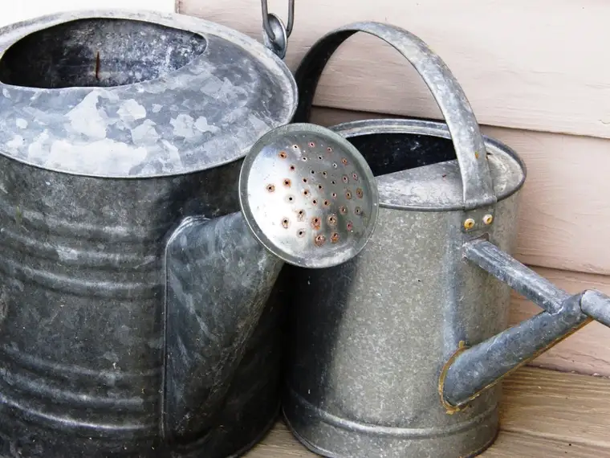

I didn’t plot it out in advance. But at some point in the last couple weeks, while sweeping up cobwebs and shuffling papers here on my online writing space, I realized another change was in order.
Along with a new look and name, it’s come to my delayed attention that a revised “watering schedule” for the “flowers” I grow and tend to here at Peace Garden Passage needed to be planted.
My old watering schedule went like this: Monday I wrote about family life and other random stuff. Wednesday presented mostly thoughts on the writing life. And Friday’s space was reserved for faith fluttering — those spiritual pontifications that begged for air.
Bringing these three main themes of my work and life into one comfy spot, or passageway, seems to have lent itself to also streamlining when it is I do this work. Because the mid-week infusion of inspiration on my previous Peace Garden Writer blog seemed to work tidily, I thought I’d bring that same idea to this space.
And so it is that I’ve decided on Wednesdays as the day I’ll bring out the watering cans and liven up my florals here on Peace Garden Passage. From here on out, that’s the day to make a pit stop here and find out what’s flowering.

I’ve decided that if something extraordinary happens that compels me here a different day, that’s okay too – I want to retain that freedom of creative thought. But to foster more balance in my life, for the most part, the Wednesday posting will be the new routine.
I know this will be a help to me. And I hope it will be for you as well. Time seems always in short supply. And as much as I have loved convening here thrice weekly for nearly seven years now, it’s time to bring more energy to the other spaces in my life that demand them. And to give your inbox some breathing time, too, for those of you who have been faithful and constant readers.
Truth be told, I think my mother may be the only one disappointed. She is, I’m pretty sure, my most faithful reader. And I’m grateful for that (thanks Mom!). But Mom has other ways of finding me, too, so I really do think this will work out just fine. My hope is that with fewer posts, the ones that do show up will be even richer.
May your own watering schedules nourish you as you have nourished me by your comments and love!
Peace Garden Mama-Writer
Q4U: When did you last make a change to ensure your garden flourishes?